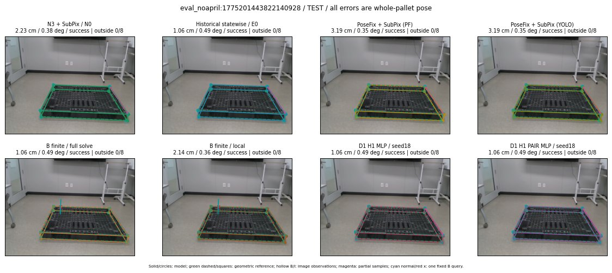

Whole-pallet pose errors; reference is a fixed geometric annotation, not certified physical GT.

Scores are uncalibrated logits. N0 retention is a numerical pose alias; it differs from H0 none or B fallback. B/I and profiles in baseline/B panels are original observations; L panels use new D1 observations. Only one deterministic supported B query is shown in a thumbnail; full support counts are below. Grey privacy rectangles edit the display copy only and are unrelated to O states; all observations were measured on original pixels. Thumbnails use JPEG quality85; detailed scientific panels are PNG.
| Method | Whole pose / cm, deg | Actual source | Selected ID | Score | Archived candidates | Eligible | N0 retained | H0 none | Fallback | Finite profiles |
|---|---|---|---|---|---|---|---|---|---|---|
| Raw YOLO + F | 2.80 cm / 0.18 deg / success | OTHER | None | N/A | N/A | N/A | False | N/A | None | N/A |
| N3 + SubPix / N0 | 2.23 cm / 0.38 deg / success | N0 | None | N/A | N/A | N/A | True | N/A | None | N/A |
| Historical statewise / E0 | 1.06 cm / 0.49 deg / success | E0_REGENERATED | None | N/A | N/A | N/A | False | N/A | False | N/A |
| PoseFix raw | 4.14 cm / 0.38 deg / success | OTHER | None | N/A | N/A | N/A | False | N/A | None | N/A |
| PoseFix + SubPix (PF) | 3.19 cm / 0.35 deg / success | OTHER | None | N/A | N/A | N/A | False | N/A | False | historical support records 9; finite audit N/A |
| PoseFix + SubPix (YOLO) | 3.19 cm / 0.35 deg / success | OTHER | None | N/A | N/A | N/A | False | N/A | False | historical support records 9; finite audit N/A |
| Historical L, seed18 | 1.98 cm / 0.55 deg / success | OTHER | NEW/B/ORIGINAL_WD/h0/G13/ORIGINAL_WD/sample/0/PROPOSED_NATIVE_YAW_0 | N/A | 69 | 69 | False | False | False | N/A |
| Historical B fixed bank | 1.06 cm / 0.49 deg / success | E0_REGENERATED | G13/ORIGINAL_WD/sample/0 | N/A | N/A | N/A | False | N/A | False | N/A |
| Historical B full | 1.98 cm / 0.55 deg / success | OTHER | NEW/B/ORIGINAL_WD/h0/G13/ORIGINAL_WD/sample/0/PROPOSED_NATIVE_YAW_0 | N/A | N/A | N/A | False | N/A | False | N/A |
| Historical edge full | 1.65 cm / 0.79 deg / success | OTHER | NEW/edge/ORIGINAL_WD/h0/G13/ORIGINAL_WD/sample/0/PROPOSED_NATIVE_YAW_0 | N/A | N/A | N/A | False | N/A | False | N/A |
| Historical AB full | 1.98 cm / 0.55 deg / success | OTHER | NEW/AB/ORIGINAL_WD/h0/G13/ORIGINAL_WD/sample/0/PROPOSED_NATIVE_YAW_0 | N/A | N/A | N/A | False | N/A | False | N/A |
| B finite / fixed bank | 1.06 cm / 0.49 deg / success | E0_REGENERATED | G13/ORIGINAL_WD/sample/0 | N/A | N/A | N/A | False | N/A | False | 37/37 |
| B finite / full solve | 1.06 cm / 0.49 deg / success | E0_REGENERATED | G13/ORIGINAL_WD/sample/0 | N/A | N/A | N/A | False | N/A | False | 37/37 |
| B finite / local | 2.14 cm / 0.36 deg / success | OTHER | NEW_FINITE/B/ORIGINAL_WD/h0/N0_LOCAL_SAME_PHYSICAL_POSE/ORIGINAL_WD | N/A | N/A | N/A | False | N/A | False | 37/37 |
| Edge finite / full solve | 1.06 cm / 0.49 deg / success | E0_REGENERATED | G13/ORIGINAL_WD/sample/0 | N/A | N/A | N/A | False | N/A | False | 37/37 |
| D0 H0 MLP / seed18 | 1.06 cm / 0.49 deg / success | E0_REGENERATED | E0_REGENERATED | 4.865234375 | 34 | 34 | False | False | False | N/A |
| D0 H0 MLP / seed19 | 1.06 cm / 0.49 deg / success | E0_REGENERATED | E0_REGENERATED | 6.353207588195801 | 34 | 34 | False | False | False | N/A |
| D0 H0 MLP / seed20 | 1.06 cm / 0.49 deg / success | E0_REGENERATED | E0_REGENERATED | 3.8678226470947266 | 34 | 34 | False | False | False | N/A |
| D0 H1 MLP / seed18 | 1.06 cm / 0.49 deg / success | E0_REGENERATED | E0_REGENERATED | 1.3317829370498657 | 34 | 34 | False | False | False | N/A |
| D0 H1 MLP / seed19 | 1.06 cm / 0.49 deg / success | E0_REGENERATED | E0_REGENERATED | 0.8722715377807617 | 34 | 34 | False | False | False | N/A |
| D0 H1 MLP / seed20 | 1.06 cm / 0.49 deg / success | E0_REGENERATED | E0_REGENERATED | 1.4063993692398071 | 34 | 34 | False | False | False | N/A |
| D1 H0 MLP / seed18 | 2.23 cm / 0.38 deg / success | N0 | N0 | 8.601698875427246 | 34 | 34 | True | True | True | N/A |
| D1 H0 MLP / seed19 | 2.23 cm / 0.38 deg / success | N0 | N0 | 9.570514678955078 | 34 | 34 | True | True | True | N/A |
| D1 H0 MLP / seed20 | 2.23 cm / 0.38 deg / success | N0 | N0 | 8.586874961853027 | 34 | 34 | True | True | True | N/A |
| D1 H1 MLP / seed18 | 1.06 cm / 0.49 deg / success | E0_REGENERATED | E0_REGENERATED | 1.161514163017273 | 34 | 34 | False | False | False | N/A |
| D1 H1 MLP / seed19 | 1.06 cm / 0.49 deg / success | E0_REGENERATED | E0_REGENERATED | 0.8129115104675293 | 34 | 34 | False | False | False | N/A |
| D1 H1 MLP / seed20 | 1.06 cm / 0.49 deg / success | E0_REGENERATED | E0_REGENERATED | 0.8806860446929932 | 34 | 34 | False | False | False | N/A |
| D1 H1 ROLE AFFINE / seed18 | 1.06 cm / 0.49 deg / success | E0_REGENERATED | E0_REGENERATED | 1.7780107259750366 | 34 | 34 | False | False | False | N/A |
| D1 H1 ROLE AFFINE / seed19 | 1.06 cm / 0.49 deg / success | E0_REGENERATED | E0_REGENERATED | 0.9933703541755676 | 34 | 34 | False | False | False | N/A |
| D1 H1 ROLE AFFINE / seed20 | 1.06 cm / 0.49 deg / success | E0_REGENERATED | E0_REGENERATED | 1.552238941192627 | 34 | 34 | False | False | False | N/A |
| D1 H1 PAIR MLP / seed18 | 1.06 cm / 0.49 deg / success | E0_REGENERATED | E0_REGENERATED | 0.26338374614715576 | 34 | 2 | False | False | False | N/A |
| D1 H1 PAIR MLP / seed19 | 1.06 cm / 0.49 deg / success | E0_REGENERATED | E0_REGENERATED | 0.624055802822113 | 34 | 2 | False | False | False | N/A |
| D1 H1 PAIR MLP / seed20 | 1.06 cm / 0.49 deg / success | E0_REGENERATED | E0_REGENERATED | 1.087815523147583 | 34 | 2 | False | False | False | N/A |
| D1 H1 PAIR ROLE AFFINE / seed18 | 1.06 cm / 0.49 deg / success | E0_REGENERATED | E0_REGENERATED | 1.0755010843276978 | 34 | 2 | False | False | False | N/A |
| D1 H1 PAIR ROLE AFFINE / seed19 | 1.06 cm / 0.49 deg / success | E0_REGENERATED | E0_REGENERATED | 1.1759841442108154 | 34 | 2 | False | False | False | N/A |
| D1 H1 PAIR ROLE AFFINE / seed20 | 1.06 cm / 0.49 deg / success | E0_REGENERATED | E0_REGENERATED | 0.9610577821731567 | 34 | 2 | False | False | False | N/A |
| Regenerated common E0 | 1.06 cm / 0.49 deg / success | E0_REGENERATED | E0_REGENERATED | N/A | N/A | N/A | False | N/A | False | N/A |